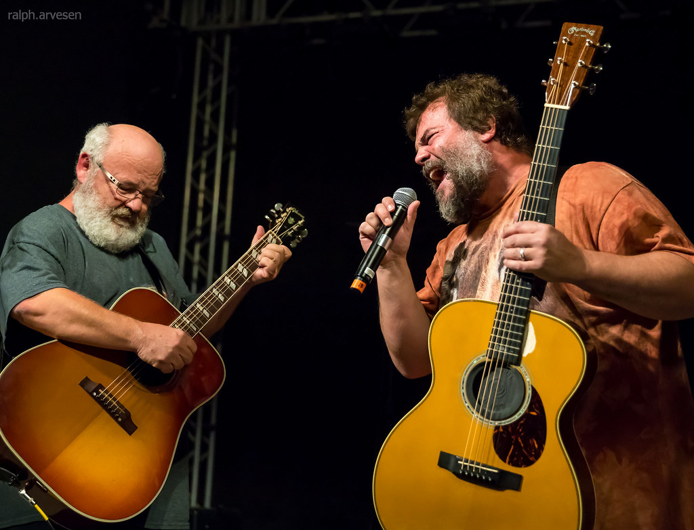

Kyle Gass and Jack Black, bandmates in Tenacious D. Credit Ralph Arvesen.
The History of Tenacious D:
- 1986 - Kyle Gass and Jack Black meet in an L.A. theater troupe.
- 1994 - The duo performs for the first time as a band, getting their name from an audience vote.
- 2000 - Epic Records signs the group due to Jack Black's popularity and the band's successful HBO TV show. They put out a self-titled album.
- 2006 - The band releases a motion picture entitled "The Pick of Destiny". The film is critically panned, but well received by fans.
- 2012 - After a hiatus, the band records their third album "Rize of the Fenix". The record is hailed by critics as a return to form.